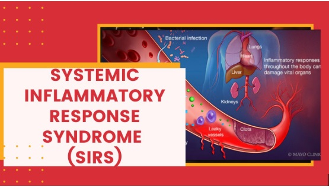

Designed an interactive bike dashboard in Excel by cleaning and analyzing raw data, transforming it into meaningful insights. The dashboard visualizes key metrics for better decision-making and trend analysis.
This analysis involved cleaning and processing the IPL data to extract meaningful insights, enabling a deeper understanding of match statistics, player performance, and team trends.

Created a Tableau storyboard for ICU sepsis patients, utilizing calculated fields, Level of Detail (include, exclude, fixed), filters, parameters, and sets to deliver comprehensive insights.
Created an interactive bike dashboard in Tableau, converting raw data into actionable insights. It visualizes key metrics like top customers, revenue by year, state, store, and brand, showcasing profit and KPIs for better decision-making.
This Power BI dashboard offers key insights into Adventure Works sales, with tabs for executive overview, product details, customer insights, and interactive maps for trend visualization.

Built a clinical dashboard tracking vital signs
(heart rate, temperature, respiration) and key parameters (PaCO₂, WBC) for SIRS.Implemented custom email alerts for threshold violations.
This analysis involved cleaning the Netflix dataset and using SQL queries to extract insights on viewing patterns, ratings, and content trends for data-driven analysis.